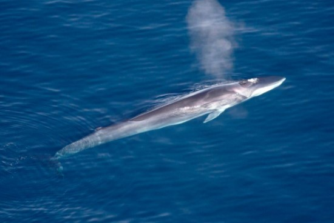

El rorcual común es un animal pelágico, que vive en aguas oceánicas aunque puede acercarse a la plataforma continental. Se distribuye por la mayoría de los océanos de zonas templadas y polares. Es raro encontrarlos en latitudes tropicales.
- Vive en aguas oceánicas aunque puede acercarse a la plataforma continental
- Se distribuye por la mayoría de los océanos de zonas templadas y polares. Es raro encontrarlos en latitudes tropicales
- Se alimentan de pequeños invertebrados (krill), peces pequeños, como el capelán (Mallotus villosos), el arenque (Clupea harengus) y el boquerón (Engraulis encrasicuolus) y calamares
- Tanto machos como hembras se comunican emitiendo pulsos de 20Hz, que pueden oírse a más de cien kilómetros de distancia dentro del agua
- Su depredador natural es la orca
Regresar a la página de Inicio